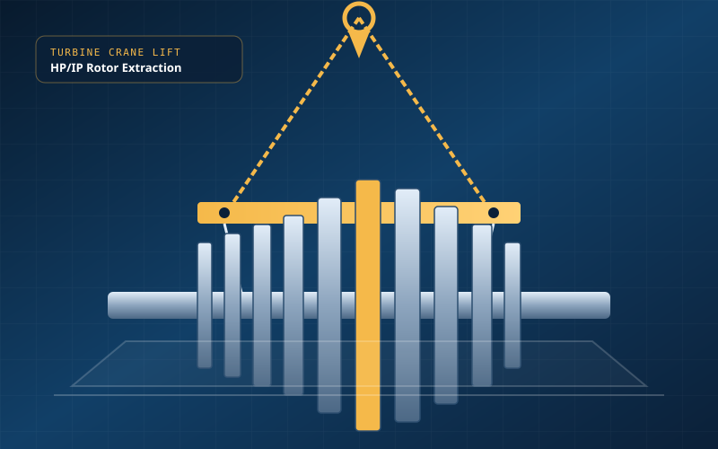
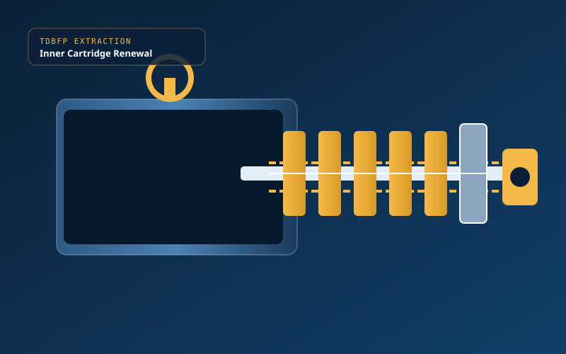
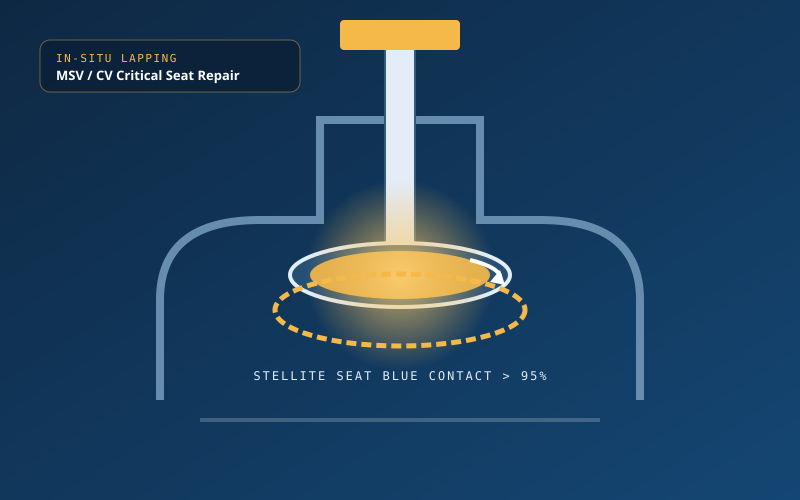
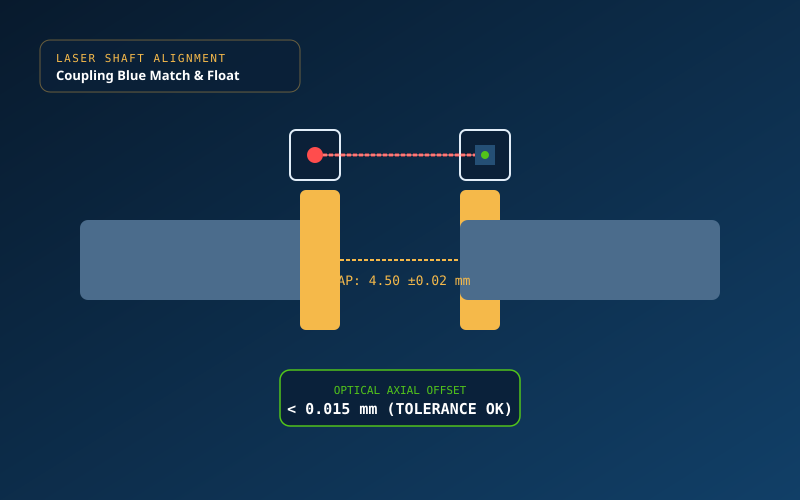
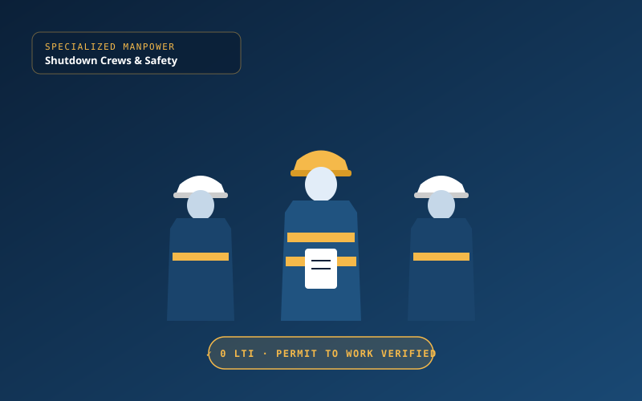
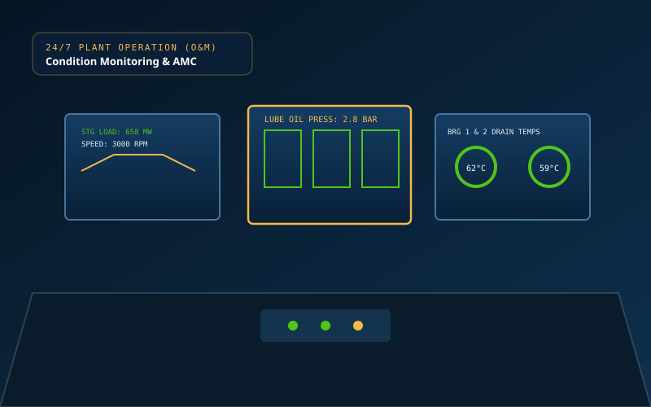

Engineered for absolute reliability.
From supercritical capital outages to emergency breakdown recovery, we deliver single-point accountability for mission-critical power generation equipment.
STG Outage & Capital Overhauls
Complete cylinder lifting, blading NDT, labyrinth seal renewal, dynamic balancing, and laser shaft alignment up to 800 MW sets.
TDBFP & BFPT Overhauling
Specialized cartridge refurbishment, balance disc blue matching, and mechanical seal renewals for 185+ bar supercritical feed systems.
Plant Equipment & TG Island Erection
Turbine-generator heavy crane placement, sole plate leveling (±0.05 mm), condenser expansion bellows, and pre-commissioning rolling.
Structural & High-Pressure Piping
Shop & site fabrication of alloy steel (P11/P22/P91) steam piping spools, heavy structural gantries, and 100% radiographic NDT welds.
Critical High-Pressure Valves
In-situ optical diamond lapping (>95% blue contact), spindle runout correction, and hydraulic actuator overhauls for MSV, CV, and bypass.
Certified Outage Manpower Supply
Rapid deployment of trade-tested millwright fitters, turbine supervisors, NDT Level-II technicians, and IBR welders with zero punch-list record.
Every outage, taken apart on paper first.
We operate with zero guesswork. Every overhaul follows a strict Quality Assurance Plan (QAP) aligned with OEM specifications and signed off at each milestone.
The SD Standard
- Zero Compromise HSE: Daily toolbox talks, 100% LOTO enforcement, permit-to-work compliance.
- Traceable Metrology: All micrometers, dial gauges, and laser sensors backed by NABL calibration certificates.
- OEM-Level Clearances: Adherence to BHEL, Siemens KWU, GE, and API 612/687 technical tolerances.
- Turnaround Dossier: Comprehensive handover binder containing all clearance sheets, balancing polar charts, and NDT reports.
Delivered on site, on schedule.
Proven mechanical outage benchmarks on Toshiba supercritical steam turbine sets across key NTPC generating stations.
800 MW Supercritical STG Outage (Toshiba Turbine)
Major mechanical capital outage of Toshiba 800 MW supercritical steam turbine. HP, IP, and double-flow LP cylinder dismantling, rotor extraction, NDT, labyrinth seal renewal, diaphragm alignment, and laser shaft re-alignment.
800 MW Supercritical STG Overhaul (Toshiba Turbine)
Complete mechanical overhaul of Toshiba 800 MW supercritical turbine-generator unit. HP/IP cylinder casing opening, journal bearing scraping, rotor runout checks, coupling blue matching, and casing box-up.
660 MW Supercritical STG Capital Outage (Toshiba Turbine)
Planned capital outage of Toshiba 660 MW supercritical set. Cylinder casing lift, rotor inspection, blading dye-penetrant examination, optical diaphragm alignment, and valve servo actuator overhauling.
Trusted by India's leading power utilities & industrial fleets.
Life on site: Precision in action.





